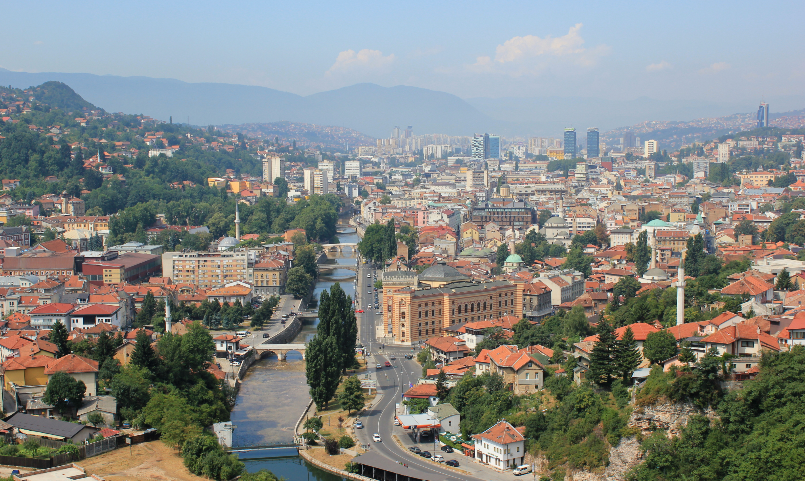

Kakve su cijene kvadrata nekretnina u Sarajevu, Mostaru i Banjaluci? Šta se više traži, stanovi ili kuće, manje ili veće kvadrature? Ko kupuje, da li je veća potražnja za užim jezgrom grada, ili na periferiji? U Sarajevu strašno varira cijene kvadrata stanova u starogradnji i novogradnji, međutim, cijenu determinira isključivo i samo lokacija. Imali smo slučaj da smo nedavno prodali stan vrlo male kvadrature (40 metara kvadratnih) za nevjerovatnih 7.000 KM po kvadratu u novogradnji u centru grada, a ako u stanogradnji nađemo stan da je 3.000 KM po kvadratu onda mislimo da smo imali sreće. Inače kvadrature manjih stanova su mnogo skuplje u odnosu na velike jer je u malom maksimalno iskorišten prostor
Potencijalno nova stambena politika u Bosni i Hercegovini daje malo nade za građane, pogotovo mlade da će uspjeti obezbijediti sebi krov nad glavom. Država će, potencijalno ukinuti PDV na kupovinu prve nekretnine. Bilo kakva vrste uštede, značajna je, slažu se građani. No, put do vrijednosti sa kojom će se kupiti stan i dalje je trnovit. Realnost, koja je snove svela na 50 kvadrata koji koštaju u prosjeku 200.000 KM. Jedna spavaća soba, dnevni boravak i kuhinja postala je nedosanjana vrsta nekretnine. Vijest o potencijalnom ukidanju PDV-a na kupovinu prve nekretnine i uštedi od 17.000 maraka pojedine građane obradovala.
Ekspertkinja za nekretnine otkriva šta utječe na cijenu najma. Prosječna cijena najma dvosobnog stana u Sarajevu je od 450 do 2000 KM a u Banjaluci od 400 do 2.500 KM. Cijene najma stanova u posljednje dvije godine porasle su za skoro 20 posto.
Najjeftiniji stanovi u Banjoj Luci su u Šargovcu, udaljenom oko devet kilometara od centra. Tu je cijena po kvadratu u izgradnji oko 2.700-2.800 KM, koliko je koštao kvadrat u centru prije tri godine. Najskuplji stan trenutno je u samom centru, u ogromnoj stambenoj zgradi koju je investitor nazvao “Bijeli dvor” i nalazi se neposredno uz poznati objekat ustanove kulture Banski dvor.
Iako se izdavanjem stanova i apartmana može dobro zaraditi, vlasnici nekretnina zbog nekih gostiju mogu imati više štete nego koristi. Dokaz za to je Ashley Class iz Sjeverne Karoline, SAD, koja iznajmljuje kuću za nekoliko osoba. Njeni gosti su nakon trosedmičnog boravka za sobom ostavili čiste sobe i ocjenu od pet zvijezdica… Činilo se da su idealni gosti. Međutim, Class je ubrzo nakon toga dobila šokantan račun za struju od 1.500 dolara (blizu 2.660 KM)
Broj predviđenih stanova za gradnju u junu ove godine je za 57 posto manji u odnosu na isti period lani, pokazuju podaci Agencije za statistiku Bosne i Hercegovine. U odnosu na kraj prethodne godine, broj predviđenih stanova za gradnju je manji za 54 posto. Tako se u ovim podacima navodi da je broj izdatih odobrenja za građenje u junu ove godine u odnosu na isti period lani manji za 26,6 posto, a u odnosu na kraj prošle godine za 29,3 posto.
Najviše stanova u 2023. je prodano u općinama Novo Sarajevo (470), Novi Grad Sarajevo (419) i Centar Sarajevo (369), dok je u ostalim općinama broj prodanih stanova znatno manji. Do smanjenja prodaje stanova je došlo u svim općinama osim Vogošće, u kojoj je prodano 23 stana (26 posto) više nego u 2022. godini, piše BiznisInfo. Smanjenje obima prodaje stanova u 2023. je pratilo i smanjenje prometa. Tokom 2023. godine je u sarajevskim općinama ostvarena prodaja stanova u vrijednosti od približno 287 miliona KM, što je za oko 16% manje u odnosu na 2022. godinu.Najveći promet stanova je zabilježen u općinama Centar Sarajevo i Novo Sarajevo (78 miliona KM) i Novi Grad Sarajevo (57 miliona KM). U odnosu na 2022, najveći rast prometa stanova je zabilježen u općini Vogošća (45%), Hadžići (42%) i Ilijaš (7%). Najviša cijena stana u Federaciji BiH prometovanog u 2023. godini ostvarena na području općine Stari Grad Sarajevo i njegova ukupna cijena je iznosila 914.600 KM, a korisna površina tog stana je 170 m2.
Već nekoliko godina u Italiji se mogu kupiti kuće za jedan euro, ali najčešće ono što zvuči predobro da bi bilo istinito to zapravo i jest. Najčešće su to kuće u koje treba uložiti dosta novca da bi bile prikladne za život ili kao nekretnina za odmor, odnosno najam.
Novi, izmijenjeni Zakon o prodaji stanova sa stanarskim pravom još neko vrijeme će pričekati u fioci. Dom naroda usvojio je Zakon po redovnoj proceduri, pa će se o njemu razgovarati na narednoj sjednici. Ipak, mnogi su polagali nade da će se što prije regulisati ova, inače slabo regulisana oblast. Sa druge strane, sve su glasnije inicijative da se visoke cijene na tržištu nekretnina discipliniraju austrijskom metodom.
ITD Real Estate/Facebook/screenshot Oglas za prodaju tri stana u Ljubljani izazvao je veliku pometnju na društvenoj mreži jer je najmanja garsonjera veličine samo 12 kvadrata. Kako bi uštedio prostor, vlasnik je madrac stavio na vrh fioke. Međutim, mnogi komentatori ističu da na fotografijama jedva da se vide prozori.
U državi koju godišnje napusti desetine hiljada mladih, gdje je prosječna plata 1.200 KM, cijena kvadrata stana nerijetko iznosi preko tri hiljade maraka. Riješiti stambeno pitanje i osamostaliti se za mnoge mlade ostaje nedosanjani san.
U posljednjih nekoliko godina, postalo je izrazito teško i gotovo nepriuštivo kupiti stan u Sarajevu. Trend iznajmljivanja stanova umjesto kupovine odavno je prisutan u Evropi i SAD-u, a čini se da je sada došao i kod nas. Cijene nekretnina u Sarajevu su konstantno u usponu, dosežući čak i do 8.000 KM po kvadratu na nekim atraktivnim lokacijama. Jedan od ključnih faktora koji dodatno podiže cijene nekretnina u Sarajevu jeste prisustvo useljenika iz dijaspore i drugih dijelova regiona. Ovi ljudi kupuju stanove u gradu, stvarajući veću potražnju, iako često ne provode veći dio godine u Sarajevu. Na taj način se dodatno vrši pritisak na tržište nekretnina i čini ga izazovnijim za domaće stanovništvo. Ključni problem je i nedostatak investitora i nedovoljna gradnja koja ne može pratiti rastuću potražnju. Kada bi ponuda bila veća, to bi smanjilo pritisak na cijene nekretnina. Ako uzmemo u obzir da sav prihod ide prema štednji za kupovinu stana i ne uzimamo u obzir inflaciju, kamate i druge faktore, računica je jasna. Godišnja plata prosječne osobe u BiH iznosi 15.144 KM što znači da će vam za kupovinu stana biti potrebno 14,5 godina.
Cijene nekretnina uvijek su zanimljiva tema naročito u većim gradovima u BiH. Cijene nikada nisu bile veće, a provjerili smo i koje su to najskuplje kuće koje se u ovom momentu prodaju u našoj zemlji.
1.Vila na Ilidži najskuplja u BiH
2.Kompleks u Mostaru od skoro 3 miliona
3.Kuća i zemljište u Buća Potoku – dva i po miliona
4. Kuća u Logavinoj ulici u Sarajevu
5. Dvije kuće u Bojniku – dva miliona